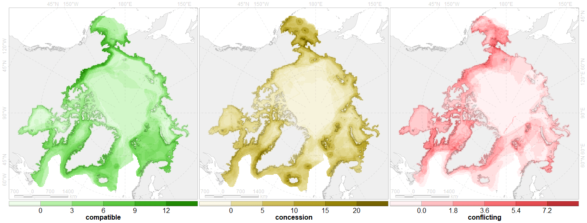

<!-- ## Метод --> .tiny[ .triple[ 1. Взял "compatibility assessment_all_2021-03-05.xlsx" 1. Взял вкладку "Shipping" 1. Для двух правых столбцов в одном месте заменил "0/0" на "0". 1. Взял столбец "Tanker (oil and petrochemicals)". По сезонам не отбирал. 1. Рассматривал геометрию CF в ячейках АркНета. Не учитывал ни Amount, ни покрытие (как в Accenter'е: **Layer overlap** – shows the part of the study area with non-zero CF coverage). То есть, получается несколько расширенное покрытие. 1. Создал матрицу с нулями. Строки - ячейки, столбцы - светофор. 1. Прошелся по каждой CF, взяв значение светофора и прибавив к ячейкам CF к имеющимся значениям по единице. 1. Матрицу визуализировал. ] Такие ли ты карты хотел получить? ] <!-- ## Результат --> 